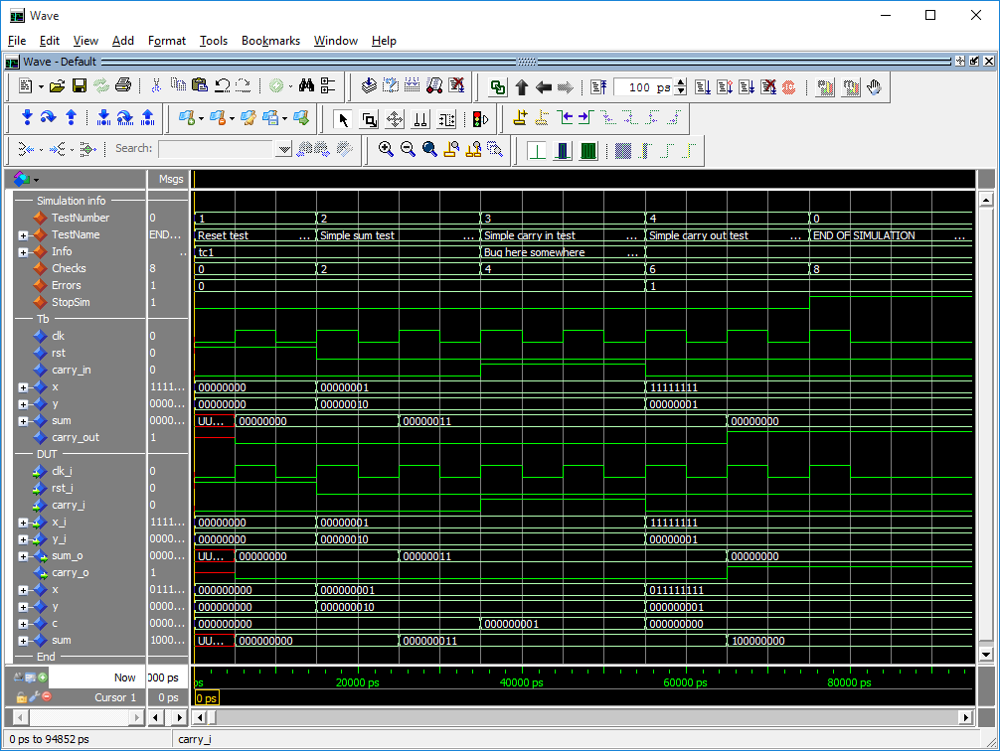
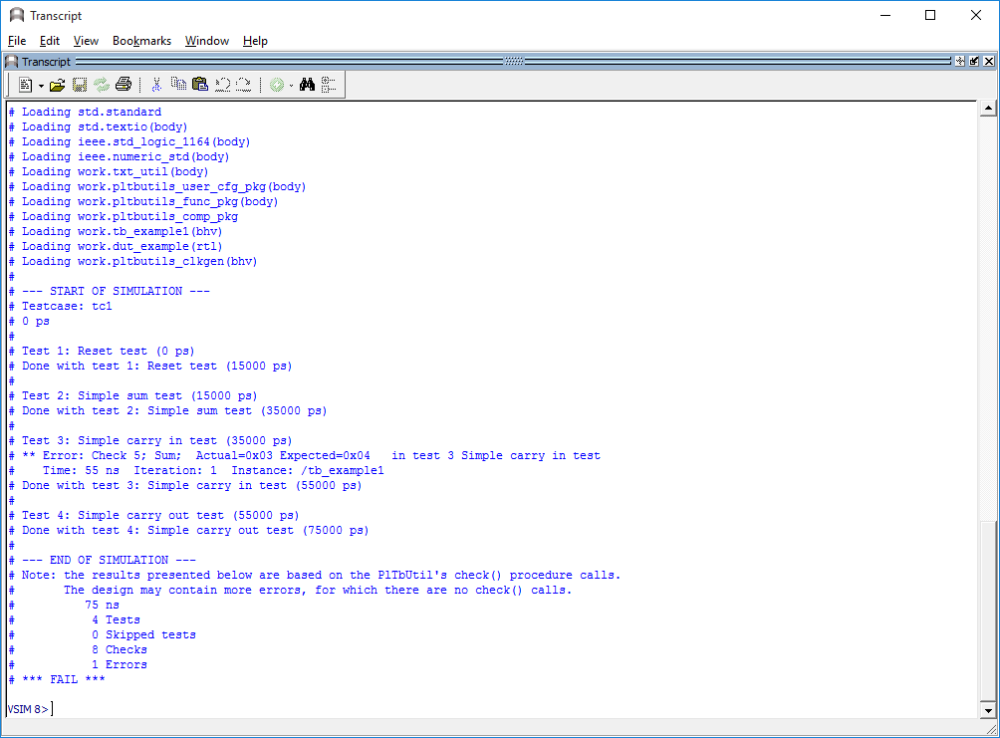
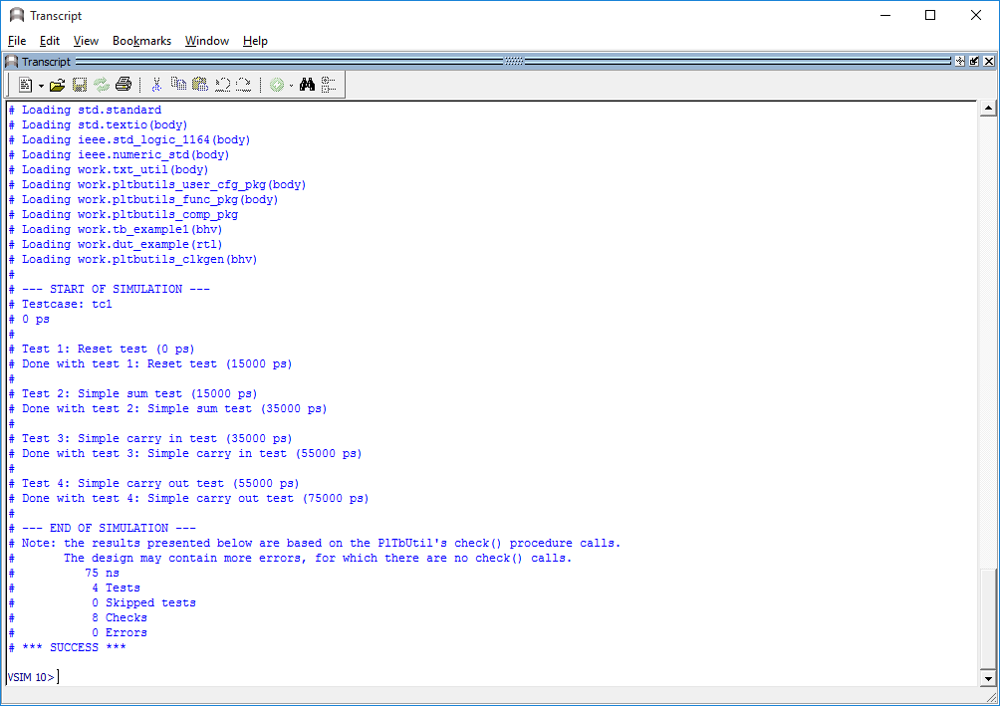

|
PlTbUtils
1.3
PlTbUtils is a collection of functions, procedures and components for easily creating stimuli and checking response in automatic self-checking testbenches.
|
|
PlTbUtils
1.3
PlTbUtils is a collection of functions, procedures and components for easily creating stimuli and checking response in automatic self-checking testbenches.
|
Author: Per Larsson, pela.opencores@gmail.com
PlTbUtils makes it easy to create automatic, self-checking simulation testbenches, and to locate bugs during a simulation. It is a collection of functions, procedures and testbench components that simplifies creation of stimuli and checking results of a device under test.
It is intended that PlTbUtils will constantly expand by adding more and more functions, procedures and testbench components. Comments, feedback and suggestions are welcome to pela.opencores@gmail.com.
Project web page: http://opencores.org/project,pltbutils
Subversion repository URL: http://opencores.org/ocsvn/pltbutils/pltbutils/trunk
Subversion export command: svn export http://opencores.org/ocsvn/pltbutils/pltbutils/trunk pltbutils
Github repository URL: https://github.com/Sturla22/pltbutils
Hosted Doxygen documentation: https://sturla22.github.io/pltbutils/
| Rev. | Date | Author | Description |
|---|---|---|---|
| 0.1 | 09/02/2013 | Per Larsson | First draft |
| 0.2 | 11/10/2013 | Per Larsson | Added sections Acknowledgements and Language. Added reference section on waitsig(). Updated reference section on print() and pltbutils_clkgen. |
| 0.3 | 01/05/2013 | Per Larsson | Added sections User Configuration, Configuring Simulation Halt, Configuring Messages for Integration Environments. In reference section added starttest, endtest, removed testname. Updated figures and feature bullets. |
| 0.4 | 01/09/2013 | Per Larsson | Updates for alpha0006: Text modified in numerous places to reflect that PlTbUtils is now using the variable pltbv and the signal pltbs for control and status, instead of the previous shared variable and global signals. |
| 0.5 | 13/01/2014 | Per Larsson | Updates for alpha0007: added example testbench where the testcase process is instantiated in the testbench top (tb_example1). The old example where the testcase process is located in a VHDL component of its own, is now called example_tb2. |
| 0.6 | 02/02/2015 | Per Larsson | Updates for beta0002: added description of to_ascending(), to_descending(), hxstr(), functions and procedures in txt_util.vhd. |
| 0.7 | 23/11/2015 | Per Larsson | Updates for beta0003: added to VHDL versions and simulators to feature list. Added check() for boolean and for time with tolerance. In section User Configuration, added info on pltbutils_files.lst |
| 0.8 | 03/01/2016 | Per Larsson | Updates for beta0004: updated feature list, added Skipping tests, updated figures. |
| 1.0 | 26/01/2016 | Per Larsson | Updates for pltbutils v1.0: minor corrections. |
| 1.1 | 14/08/2018 | Per Larsson | Corrected handling of skipped tests. |
| 15/08/2018 | Per Larsson | Added XSim to list of supported simulators. | |
| 1.2 | 12/04/2020 | Per Larsson | Added check_binfile(), check_txtfile(), check_datfile(), and other new functions and procedures. |
| 1.3 | 12/05/2020 | Per Larsson | Updated private procedure to make check_datfile() get correct functionality with XSim. |
PlTbUtils contains the file txt_util.vhd by Stefan Doll and James F. Frenzel.
Thanks to Stefan Eriksson for suggestions and feedback.
PlTbUtils complies with VHDL-1993 and later, so it works with most VHDL simulators.
It is possible to configure the way a simulation stops, by taking advantage of the VHDL-2008 keywords stop and finish. If your simulator supports stop and/or finish, see Configuring Simulation Halt on page 19.

During a simulation, the waveform window shows current test number, test name, user-defined info, accumulated number of checks and errors. When the error counter increments, a bug has been found in that point in time.

The transcript window clearly shows points in time where the simulation starts, ends, and where errors are detected. The simulation stops with a clear SUCCESS/FAIL message, specifically formatted for parsing by scripts.

The testcase code is compact and to the point, which results in less code to write, and makes the code easier to read, as in the following example.
The PlTbUtils files are located in src/vhdl/ .
The files needed to be compiled are listed in compile order in pltbutils_files.lst .
See example testbenches using PlTbUtils in examples/vhdl/ .
This code can be simulated from sim/modelsim_tb_example1/run/ and sim/modelsim_tb_example2/run/ .
Template code is available in templates/vhdl/ .